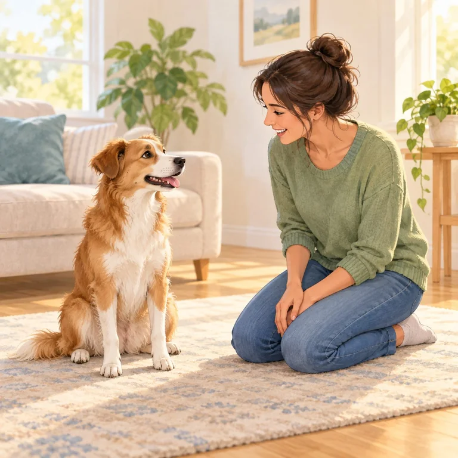
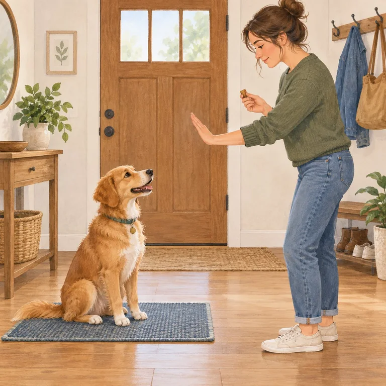
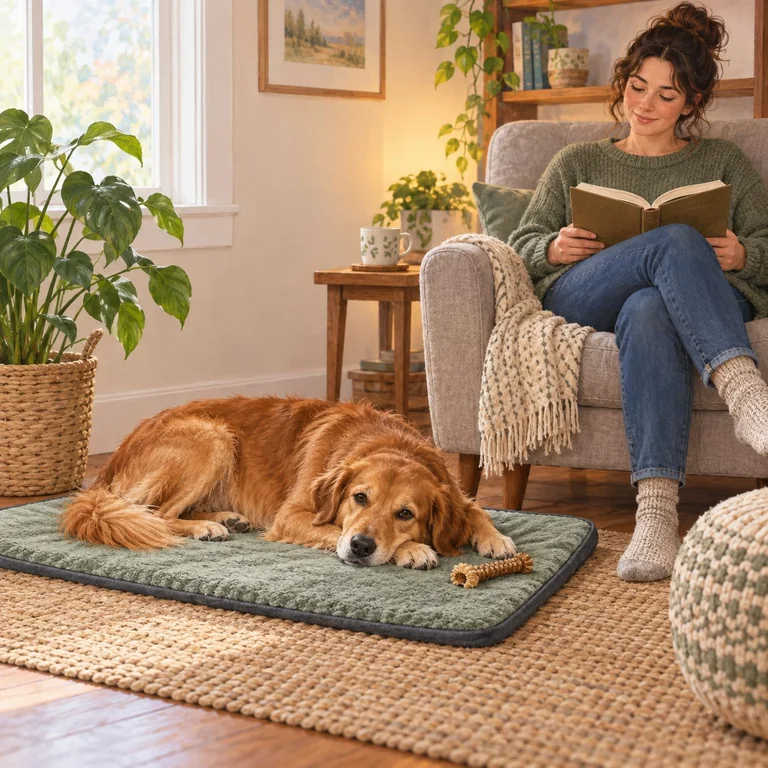
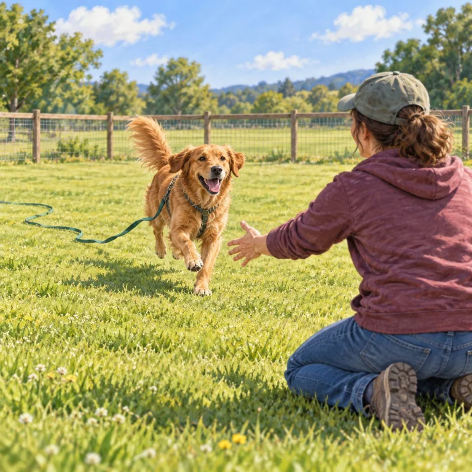
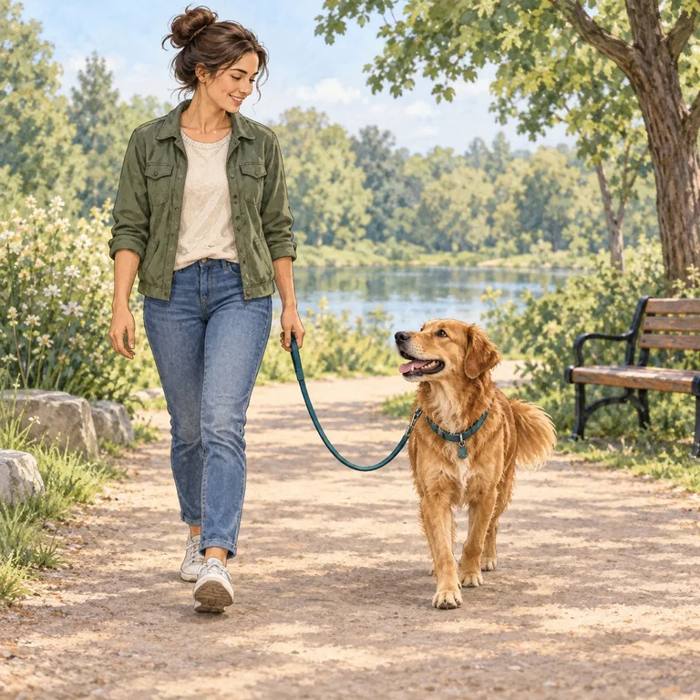
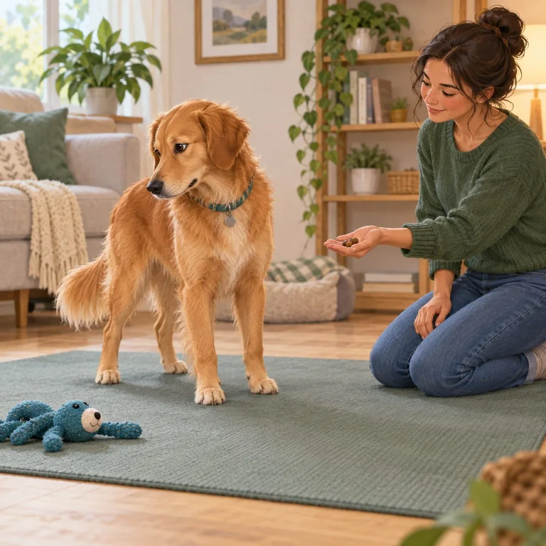
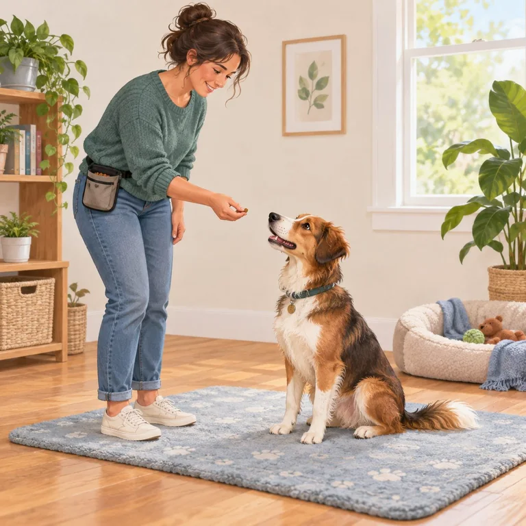
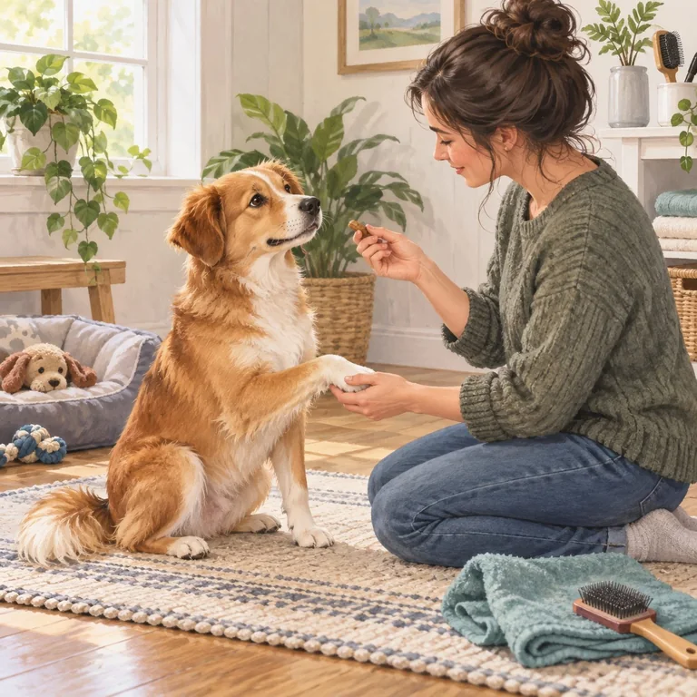
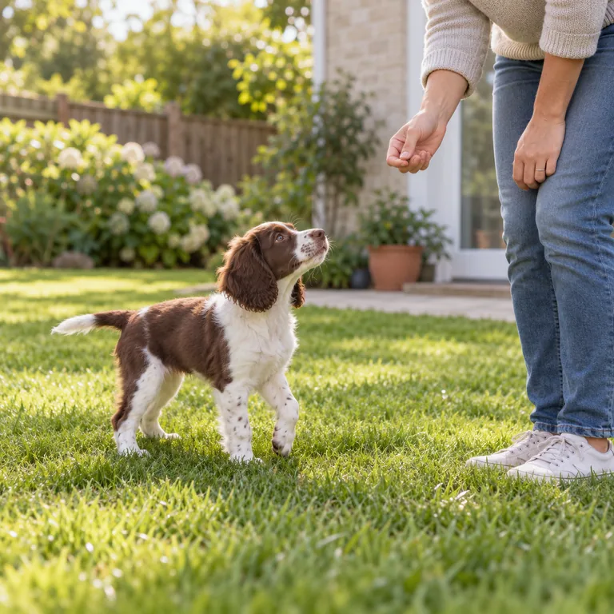
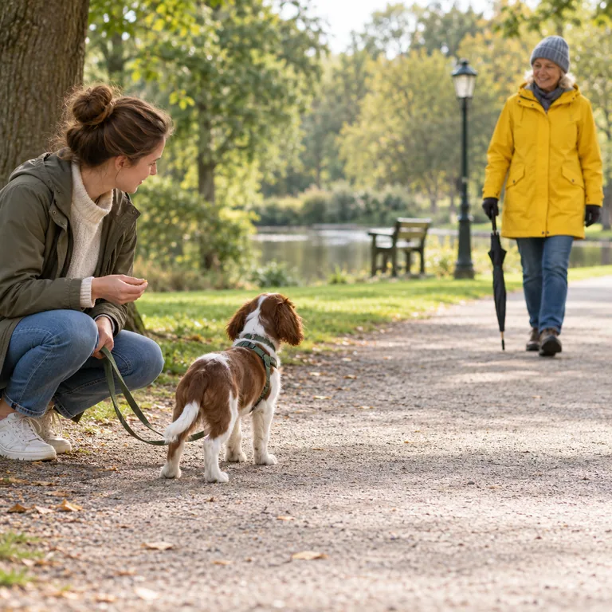

01 · Everyday cuesSkills for everyday life5 lessons

Name & attention
Teach your dog that their name predicts something good and an easy chance to reconnect.
Goal: One name cue, then a willing glance or head turn.
Start lessonQuick steps
- Start close by in a quiet room, with a few small rewards ready.
- Say the name once in a warm voice. The instant your dog turns toward you, mark with “yes.”
- Give a reward, then let them look away and reset. Repeat a few easy times.
- Practice in a new room only after the first one feels easy.
If it’s hard: Move closer, reduce distractions, or try a more exciting reward. Don’t repeat the name louder.

Sit
A useful pause for greetings and daily routines. Let your dog find the position without being pushed into it.
Goal: A relaxed sit they can leave when released.
Start lessonQuick steps
- Hold a treat near the nose, then move it slowly up and slightly back.
- As your dog’s bottom touches the floor, mark “yes” and reward.
- After a few easy repetitions, say “sit” just before the movement you already see.
- Use a release word such as “all done,” then invite another try.
If it’s hard: Reward a smaller head lift or try on a non-slip surface. Never press down on the dog’s back.

Down
Teach a comfortable lie-down as a separate cue from a relaxed, self-chosen settle.
Goal: Front elbows lower to a soft surface by choice.
Start lessonQuick steps
- With your dog standing or sitting, move a treat from the nose down between the front paws.
- Mark and reward a comfortable elbow bend or full down. Build in small steps.
- When the movement is easy, say “down” once just before your hand signal.
- Reward, then release so your dog knows the position is not endless.
If it’s hard: Try a rug or bed, reward small progress, and stop if lowering looks painful. Don’t pull legs or push shoulders.
Stay & wait
Build a brief pause with a clear release. Add time, distance, and distractions separately.
Goal: A short, calm pause—not a test of endurance.
Start lessonQuick steps
- Ask for an easy sit or down, say “stay,” and pause for one second.
- Reward while you are still close, then say your release word.
- Gradually add a second or a small step away. Return to reward before your dog gets up.
- Change one challenge at a time. Practice behind a gate or on leash around doors.
If it’s hard: Shorten the pause or distance. A stay never replaces a barrier or leash near traffic.

Come when called
Make coming back worthwhile. Recall should not predict that every fun thing is over.
Goal: Turn toward you and return in a safe, easy setting.
Start lessonQuick steps
- Begin a few steps away indoors. Say your recall cue once in a happy voice.
- Move back a little. When your dog reaches you, mark and give a generous reward.
- Release them to explore again when it is safe; this keeps coming back from ending all the fun.
- Practice outdoors only in a secure area or on a well-attached long line.
If it’s hard: Get closer and lower the distraction. Don’t call when you cannot keep your dog safe or reward the return.
02 · Everyday lifeWalks, trades & calm care5 lessons

Loose-leash walking
Teach that staying near you keeps the walk moving, with plenty of safe sniff breaks.
Goal: A soft curve in the leash, not a perfect heel.
Start lessonQuick steps
- Start somewhere quiet with a comfortable, well-fitted harness and leash.
- Mark and reward when the leash is slack or your dog checks in beside you.
- If the leash tightens, stop or gently change direction. Resume when it softens; never jerk the leash.
- Practice near harder distractions only at a distance where your dog can still respond.
If it’s hard: Choose a quieter route or add distance. Sniffing and exploring are part of a good walk.

Leave it
Teach your dog to turn away from an item before they pick it up. It is not a substitute for safe management.
Goal: Disengage from a safe practice item and check back.
Start lessonQuick steps
- Place a low-value treat in a closed hand. Let your dog sniff without saying anything.
- When they move their nose away, mark “yes” and reward from your other hand.
- Repeat until your dog can turn away easily, then add the cue “leave it.”
- Only later practice with safe items on the floor, covered by your hand or foot at first.
Safety: Keep medicines, food hazards, and rubbish out of reach. Use a barrier and a trade for dangerous finds.

Drop it
Teach a calm release of something already in your dog’s mouth—using a fair trade, never force.
Goal: Release a safe toy and feel good about the exchange.
Start lessonQuick steps
- Offer a toy that is safe to hold and a more valuable treat.
- Hold the treat near the nose. When your dog lets go, mark “yes” and give the treat.
- When your dog is relaxed about trading, add “drop it” just before offering the treat.
- Whenever safe, give the toy back so releasing does not always end the game.
Safety: Don’t pry the mouth open or chase. For guarding, use distance and get a qualified professional’s plan.
Settle on a mat
Help your dog discover a comfortable resting place while everyday life carries on.
Goal: Soft muscles and voluntary rest—not a forced down-stay.
Start lessonQuick steps
- Put a mat in a quiet spot and reward your dog for looking at or stepping onto it.
- Drop a treat between the front paws. Reward easy choices to stay, sit, or lie down.
- Place another treat on the mat before your dog needs to leave. Use a release cue.
- Practice while calm before adding mild household activity.
If it’s hard: Make the room quieter or let your dog choose another safe resting place. Never tether them to the mat.

Cooperative handling
Make paw, ear, brushing, harness, and vet-care practice predictable and easy to pause.
Goal: A dog who can opt in and signal they need a break.
Start lessonQuick steps
- Choose one touch your dog already tolerates, such as briefly touching the shoulder.
- Touch for one second, then offer a treat. Stop and give your dog room.
- Repeat only while the body stays loose and the dog chooses to return.
- Build toward a paw, ear, brush, or harness in tiny steps across separate sessions.
Stop and reset: If your dog freezes, pulls away, growls, or hides, stop. Don’t use practice to push through pain or fear.
03 · A good home startRoutines & new experiences2 lessons

Toilet-training routine
Prevent accidents by planning frequent chances to go outside and rewarding success right where it happens.
Goal: A predictable routine and a safe, easy-to-reach toilet spot.
Start lessonQuick steps
- Take your dog to the same safe spot after waking, meals, play, and before rest; learn their individual signs.
- Stay nearby and keep the moment calm. As soon as they finish, praise gently and reward outside.
- At home, supervise or use a safe pen so your dog is not left to guess where to go.
- If there is an accident, clean the spot thoroughly and adjust the routine—no scolding.
Get help: New or frequent accidents after a reliable routine can have a medical cause; ask your veterinarian.

Positive socialization
Help a young dog feel safe around ordinary people, places, sounds, surfaces, and handling—without making them greet everyone.
Goal: Calm curiosity, choice, and the ability to move away.
Start lessonQuick steps
- Choose one new sight or sound at a distance where your puppy can still sniff, eat, or look away.
- Pair a brief look with a treat or play, then let the puppy pause or leave.
- Keep it short and pleasant. Repeat another day instead of moving closer right away.
- Ask your veterinarian about local infection risks and safer places to explore before the vaccine series is complete.
Slow down: If your puppy freezes, hides, tries to escape, or stops taking food, add distance and end the exposure. Never force a greeting.